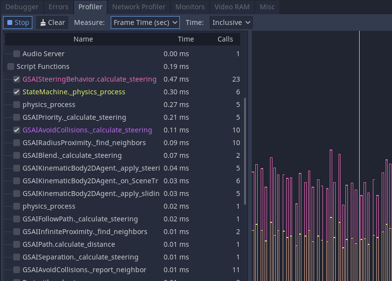

The Profiler
You run your game from Godot and play around. It's fun, it's becoming feature complete, and you feel it's getting close to release.
But then, you open the skill tree, and it grinds to a halt as something snags in your code. Watching the skill tree scroll by like it's a slide show is unacceptable. What went wrong? Is it positioning the skill tree elements, the UI, or rendering?
You could try to optimize everything and run the game repeatedly, but you can be smarter about this and narrow down the possibilities. Enter Godot's profiler.
An overview of the profiler
You can open the profiler by opening the Debugger panel and clicking on the Profiler tab.

Godot's profiler does not automatically run because profiling is performance-intensive. It has to continually measure everything happening in the game and report back to the debugger, so it's off by default.
To begin profiling, run your game then focus back on the editor. Click on the Start button in the top-left corner of the Profiler tab. You can also check Autostart, which will make the profiler automatically start when the project is run the next time. Note that the Autostart checkbox's state is not preserved across editor sessions.
Note
The profiler does not currently support C# scripts. C# scripts can be profiled using JetBrains Rider and JetBrains dotTrace with the Godot support plugin.
You can clear the data by clicking the Clear button anytime. Use the Measure drop-down menu to change the type of data you measure. The measurements panel and the graph will update accordingly.
The measured data
The profiler's interface is split into two. There is a list of functions on the left and the performance graph on the right.
The main measurements are frame time, physics frame, idle time, and physics time.
The frame time is the time it takes Godot to execute all the logic for an entire image, from physics to rendering.
Physics frame is the time Godot has allocated between physics updates. In an ideal scenario, the frame time is whatever you chose: 16.66 milliseconds by default, which corresponds to 60FPS. It's a frame of reference you can use for everything else around it.
Idle time is the time Godot took to update logic other than physics, such as code that lives in _process or timers and cameras set to update on Idle.
Physics time is the time Godot took to update physics tasks, like _physics_process and built-in nodes set to Physics update.
Note
Frame Time includes rendering time. Say you find a mysterious spike of lag in your game, but your physics and scripts are all running fast. The delay could be due to the appearance of particles or visual effects!
By default, Godot ticks on Frame Time and Physics Time. This gives you an overview of how long each frame takes relative to the allocated desired physics FPS. You can toggle functions on and off by clicking the checkboxes on the left. Other facilities make appearances as you go down the list, like Physics 2D, Physics, and Audio, before reaching Script functions, where your code appears.
If you click on the graph, you change which frame's information appears on the left. In the top right, there is also a frame counter where you can manually adjust the frame you are looking at more granularly.
Scope of measurement and measurement windows
You can change what measurement you are looking at using the Measure drop-down menu. By default, it starts with Frame Time and lists the time it takes to go through the frame in milliseconds. The average time is the average time any given function took when called more than once. For example, a function that took 0.05 milliseconds to run five times should give you an average of 0.01 milliseconds.
If accurate milliseconds count is not important, and you want to see proportions of time relative to the rest of the frame, use percentage measurements. Frame % is relative to Frame Time, and Physics % is relative to Physics Time.
The last option is the scope of the time. Inclusive measures the time a function took with any nested function calls. For example:

get_neighbors, find_nearest_neighbor and move_subject all took a lot of time. You could be fooled into thinking that this is because all three of them are slow.
But when changed to Self, Godot measures the time spent in the function body without considering function calls it made itself.

You can see that get_neighbors and move_subject have lost a lot of their importance. In effect, that means that get_neighbors and move_subject have spent more time waiting for some other function call to finish than not, and find_nearest_neighbor is actually slow.
Debugging slow code with the profiler
Finding slow code with the profiler boils down to running your game and watching the performance graph as it draws. When an unacceptable spike occurs in the frame time, you can click on the graph to pause your game and narrow the _Frame #_ to the spike's start. You may need to jump back and forth between frames and functions to find the root cause.
Under the Script functions, turn on the checkboxes for some functions to find which take time. These are the functions you need to review and optimize.
Measuring manually in microseconds
If your function is complex, it could be challenging to figure out which part needs optimization. Is it your math or the way you access other pieces of data to do the math with? Is it the for loop? The if statements?
You can narrow down the measurement by manually counting ticks as the code runs with some temporary functions. The two functions are part of the Time class object. They are get_ticks_msec and get_ticks_usec. The first measures in milliseconds (1,000 per second), and the second measures in microseconds (1,000,000 per second).
Either one returns the amount of time since the game engine started in their respective time frame.
If you wrap a piece of code with a start and end count of microseconds, the difference between the two is the amount of time it took to run that piece of code.
# Measuring the time it takes for worker_function() to run
var start = Time.get_ticks_usec()
worker_function()
var end = Time.get_ticks_usec()
var worker_time = (end-start)/1000000.0
# Measuring the time spent running a calculation over each element of an array
start = Time.get_ticks_usec()
for calc in calculations:
result = pow(2, calc.power) * calc.product
end = Time.get_ticks_usec()
var loop_time = (end-start)/1000000.0
print("Worker time: %s\nLoop time: %s" % [worker_time, loop_time])
As you become a more experienced programmer, this technique becomes less necessary. You begin to learn what parts of a running program are slow. Knowing that loops and branches can be slow comes from experience, and you gain experience by measuring and doing research.
But between the profiler and the ticks functions, you should have enough to get started finding which parts of your code need optimization.